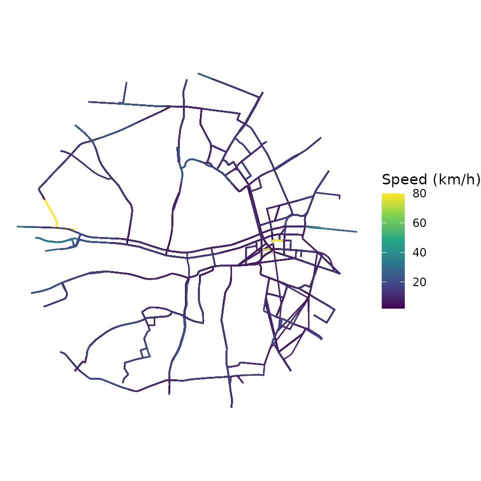
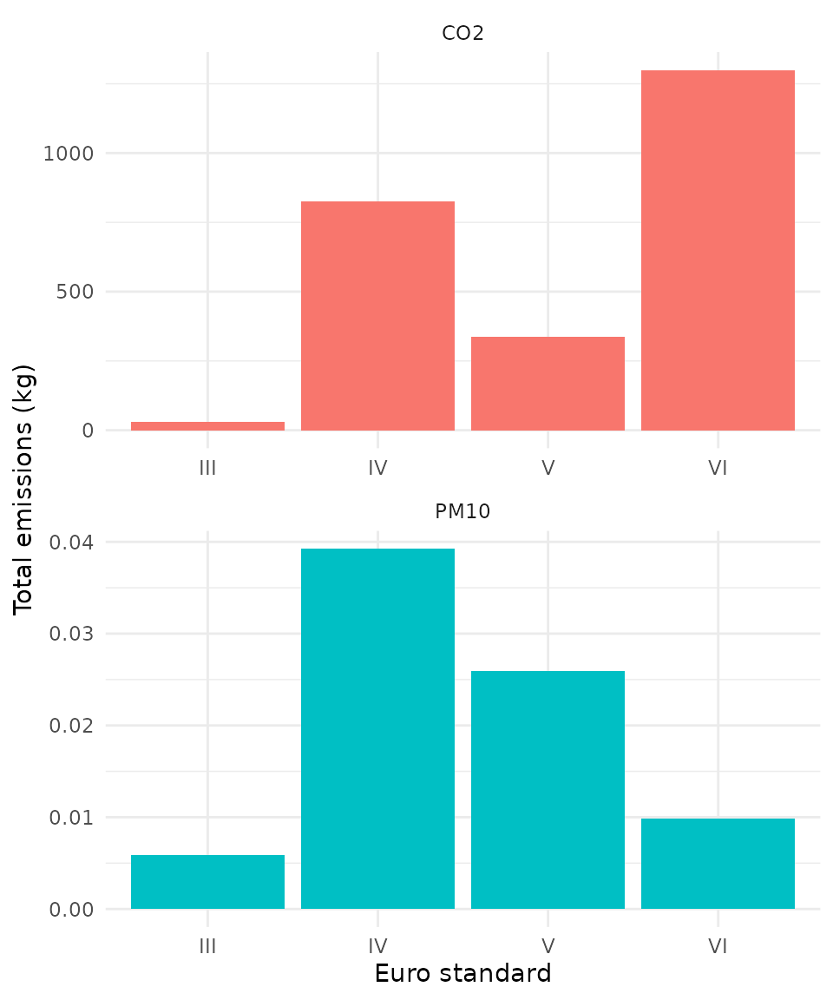
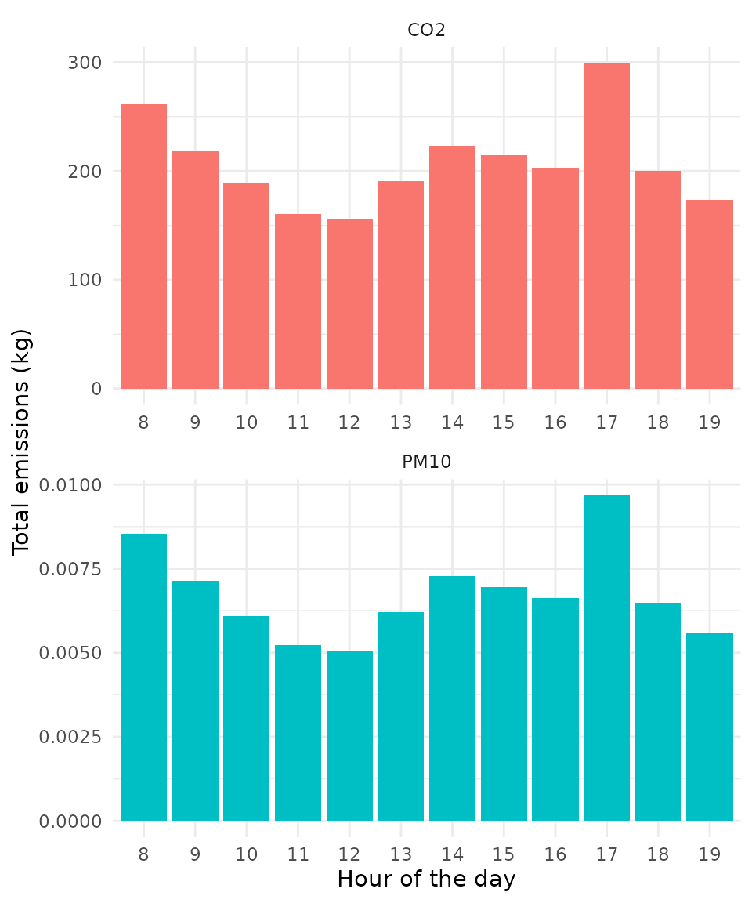
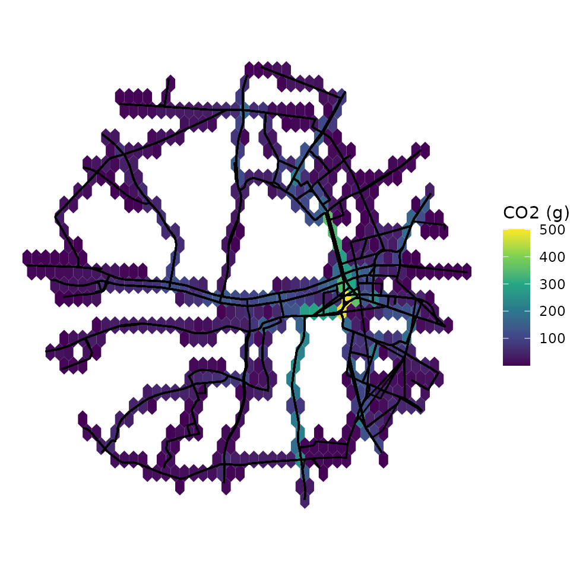

Getting started
2026-11-08
Source:vignettes/gtfs2emis_intro_vignette.Rmd
gtfs2emis_intro_vignette.RmdAbstract
gtfs2emis is an R package to estimate public
transport emissions using data in the General Transit Feed
Specification (GTFS) format. The package allows users to estimate
the emission levels of several types of pollutants for each public
transport vehicle/trip/route at high spatial and temporal
resolutions simply using a GTFS feed and some information on fleet
characteristics.
1. Introduction
This vignette introduces the main functions of gtfs2emis
and walks through a reproducible example: from a GTFS feed and a fleet
table to hot-exhaust emission estimates summarised by pollutant,
vehicle, hour of the day and space.
2. Installation
One can install gtfs2emis from CRAN, or the development
version from GitHub:
# From CRAN
install.packages("gtfs2emis")
# Dev. version with latest features
# install.packages("remotes")
remotes::install_github("ipea/gtfs2emis")The package ships with small sample GTFS feeds and fleet files:
data_path <- system.file("extdata", package = "gtfs2emis")
list.files(data_path)
#> [1] "bra_cur_fleet.txt" "bra_cur_gtfs.zip" "bra_cur-srtm.tif"
#> [4] "irl_dub_fleet.txt" "irl_dub_gtfs.zip" "usa_det_fleet.txt"
#> [7] "usa_det_gtfs.zip"- Subset of Curitiba (Brazil):
bra_cur_gtfs.zipandbra_cur_fleet.txt - Subset of Dublin (Ireland):
irl_dub_gtfs.zipandirl_dub_fleet.txt - Subset of Detroit (US):
usa_det_gtfs.zipandusa_det_fleet.txt
3. Data requirements
To estimate the emissions of a public transport system, you need:
- A GTFS feed (a
.zipfile or agtfsobject read withgtfstools::read_gtfs()). - A
data.framedescribing the fleet (for example vehicle type, age or Euro standard, and fuel). - The choice of an emission factor model. The package includes models for Europe (EMEP/EEA), Brazil (CETESB) and the US (MOVES and EMFAC).
- The choice of which pollutants to estimate. The pollutants available depend on the emission factor model.
4. Package Overview
Before we start, let’s load a few packages we’ll be using in this vignette:
library(gtfs2emis)
library(gtfstools)
library(data.table)
library(ggplot2)
library(units)
library(sf)The gtfs2emis package has two core functions:
-
transport_model()converts GTFS data into ansfobject of road segments between consecutive stops, with the distance, speed and time of each vehicle trip. -
emission_model()estimates hot-exhaust emissions from four inputs:- the output of
transport_model(); - the name of the emission factor model;
- the pollutants to estimate; and
- a
data.framewith the fleet characteristics. It returns alistwith the emissions of each pollutant and the inputs used to compute them.
- the output of
Three functions help you analyze the output of
emission_model():
-
emis_summary()to aggregate emission estimates by pollutant, vehicle characteristics or hour of the day. -
emis_grid()to spatially aggregate emission estimates using any custom spatial grid or polygons. -
emis_to_dt()to convert the output ofemission_model()fromlisttodata.table.
5. Demonstration of sample data
This example uses mostly default parameters and assumes that the fleet is evenly distributed across all routes. Two other vignettes go further: one on emission factors and one on how to build the fleet data.
We use a small sample of data for Dublin, Ireland, and estimate
CO2 and PM10 emissions of bus services on
weekdays.
5.1 Transport model
The first step is to build the transport model with
transport_model(). It takes either the path to a GTFS
.zip file or a gtfs object read with
gtfstools::read_gtfs(), and returns an sf
object of road segments with their speeds, distances and times. This is
the input emission_model() needs.
First, let’s read the GTFS data and keep only the services that run on weekdays.
# path to GTFS.zip file
gtfs_file <- system.file("extdata/irl_dub_gtfs.zip", package = "gtfs2emis")
# read GTFS
gtfs <- gtfstools::read_gtfs(gtfs_file)
# keep weekday services (drop Saturday and Sunday)
gtfs <- gtfstools::filter_by_weekday(gtfs,
weekday = c("saturday", "sunday"),
keep = FALSE)Now let’s build the transport model. This is the slowest step.
# generate transport model
tp_model <- transport_model(gtfs_data = gtfs,
min_speed = 2,
max_speed = 80,
spatial_resolution = 100)
head(tp_model)
#> Simple feature collection with 6 features and 14 fields
#> Geometry type: LINESTRING
#> Dimension: XY
#> Bounding box: xmin: -6.265914 ymin: 53.34591 xmax: -6.25602 ymax: 53.36229
#> Geodetic CRS: WGS 84
#> shape_id trip_id route_type timestamp stop_sequence
#> 1 60-1-b12-1.1.O 6264.2.60-1-b12-1.1.O 3 13:00:56 18
#> 2 60-1-b12-1.1.O 6264.2.60-1-b12-1.1.O 3 13:02:33 19
#> 3 60-1-b12-1.1.O 6264.2.60-1-b12-1.1.O 3 13:04:02 20
#> 4 60-1-b12-1.1.O 6264.2.60-1-b12-1.1.O 3 13:04:51 21
#> 5 60-1-b12-1.1.O 6264.2.60-1-b12-1.1.O 3 13:07:39 22
#> 6 60-1-b12-1.1.O 6264.2.60-1-b12-1.1.O 3 13:10:01 23
#> speed dist cumdist cumtime trip_number from_stop_id
#> 1 10.629 [km/h] 0.286389 [km] 286.389 [m] 96.999 [s] 1 8220DB000048
#> 2 11.740 [km/h] 0.290229 [km] 576.618 [m] 185.996 [s] 1 8220DB000049
#> 3 11.517 [km/h] 0.156762 [km] 733.380 [m] 234.997 [s] 1 8220DB000051
#> 4 12.184 [km/h] 0.568572 [km] 1301.952 [m] 402.992 [s] 1 8220DB000052
#> 5 14.175 [km/h] 0.559136 [km] 1861.088 [m] 544.995 [s] 1 8220DB000265
#> 6 11.473 [km/h] 0.427037 [km] 2288.125 [m] 678.991 [s] 1 8220DB000271
#> to_stop_id from_timestamp to_timestamp geometry
#> 1 8220DB000049 13:00:56 13:02:33 LINESTRING (-6.258882 53.36...
#> 2 8220DB000051 13:02:33 13:04:02 LINESTRING (-6.260943 53.36...
#> 3 8220DB000052 13:04:02 13:04:51 LINESTRING (-6.263389 53.35...
#> 4 8220DB000265 13:04:51 13:07:39 LINESTRING (-6.26464 53.356...
#> 5 8220DB000271 13:07:39 13:10:01 LINESTRING (-6.262147 53.35...
#> 6 8220DB000340 13:10:01 13:12:15 LINESTRING (-6.25953 53.348...Each row of the output is one segment of one trip, stored as an
sf LINESTRING with its distance, speed and timestamp. The
map below shows the average speed on each segment.
ggplot(data = tp_model) +
geom_sf(aes(color = as.numeric(speed))) +
scale_color_continuous(type = "viridis") +
labs(color = "Speed (km/h)") +
theme_void()
5.2 Fleet data
The next step is to prepare a data.frame describing the
fleet. It can be either:
- a simple table with the overall composition of the
fleet, in which case
gtfs2emisassumes the fleet is evenly distributed across all routes; or - a detailed table that also says which vehicles run
on which routes (
shape_ids); see the fleet data vignette for how to use it.
Here we use a simple table with the share of Dublin buses
(fleet_composition) by vehicle type, Euro standard,
technology and fuel:
fleet_file <- system.file("extdata/irl_dub_fleet.txt", package = "gtfs2emis")
fleet_df <- read.csv(fleet_file)
head(fleet_df)
#> veh_type euro fuel N fleet_composition tech
#> 1 Ubus Std 15 - 18 t III D 10 0.00998004 -
#> 2 Ubus Std 15 - 18 t IV D 296 0.29540918 SCR
#> 3 Ubus Std 15 - 18 t V D 148 0.14770459 SCR
#> 4 Ubus Std 15 - 18 t VI D 548 0.54690619 DPF+SCRThe columns required depend on the emission factor model. The EMEP/EEA model used here needs vehicle type, Euro standard, technology and fuel. The fleet data vignette lists the columns each model requires.
5.3 Emission model
Finally, emission_model() estimates the hot-exhaust
emissions. It takes the output of transport_model(), the
fleet data, the emission factor model and the pollutants. It returns a
list that includes:
- the emissions (
emi) and emission factors (EF); - the vehicle variables (
veh_type,euro,fuel,tech,fleet_composition); - the travel variables (
slope,load,speed) and the transport model itself (tp_model).
emi_list <- emission_model(tp_model = tp_model,
ef_model = "ef_europe_emep",
fleet_data = fleet_df,
pollutant = c("CO2", "PM10"))
names(emi_list)
#> [1] "pollutant" "veh_type" "euro"
#> [4] "fuel" "tech" "process"
#> [7] "slope" "load" "speed"
#> [10] "EF" "emi" "tp_model"
#> [13] "fleet_composition"6. Analyzing emission estimates
A long list can be awkward to work with. emis_to_dt()
converts the output of emission_model() into a
data.table:
emi_dt <- emis_to_dt(emi_list = emi_list,
veh_vars = c("veh_type", "euro", "fuel"),
pol_vars = "pollutant")
head(emi_dt)
#> veh_type euro fuel pollutant emi process
#> <char> <char> <char> <char> <units> <char>
#> 1: Ubus Std 15 - 18 t III D CO2 4.465973 [g] hot_exhaust
#> 2: Ubus Std 15 - 18 t III D CO2 4.350604 [g] hot_exhaust
#> 3: Ubus Std 15 - 18 t III D CO2 2.349901 [g] hot_exhaust
#> 4: Ubus Std 15 - 18 t III D CO2 8.523034 [g] hot_exhaust
#> 5: Ubus Std 15 - 18 t III D CO2 7.769609 [g] hot_exhaust
#> 6: Ubus Std 15 - 18 t III D CO2 6.659250 [g] hot_exhaustemis_summary() aggregates emissions by pollutant,
vehicle characteristics or hour of the day
(by = "pollutant", "vehicle" or
"time").
6.1 Total emissions by pollutant
emi_by_pol <- emis_summary(emi_list = emi_list,
by = "pollutant")
emi_by_pol
#> pollutant process emi
#> <char> <char> <units>
#> 1: CO2 hot_exhaust 2.489907e+06 [g]
#> 2: PM10 hot_exhaust 8.089189e+01 [g]6.2 Total emissions by vehicle type
With by = "vehicle", emissions are aggregated by vehicle
type (the default, veh_vars = "veh_type"):
emi_by_veh <- emis_summary(emi_list = emi_list,
by = "vehicle")
head(emi_by_veh)
#> veh_type pollutant process emi
#> <char> <char> <char> <units>
#> 1: Ubus Std 15 - 18 t CO2 hot_exhaust 2.489907e+06 [g]
#> 2: Ubus Std 15 - 18 t PM10 hot_exhaust 8.089189e+01 [g]Use veh_vars to aggregate by other vehicle
characteristics, such as the Euro standard:
emi_by_veh <- emis_summary(emi_list = emi_list,
by = "vehicle",
veh_vars = c("veh_type", "euro"))
head(emi_by_veh)
#> veh_type euro pollutant process emi
#> <char> <char> <char> <char> <units>
#> 1: Ubus Std 15 - 18 t III CO2 hot_exhaust 2.897499e+04 [g]
#> 2: Ubus Std 15 - 18 t IV CO2 hot_exhaust 8.242787e+05 [g]
#> 3: Ubus Std 15 - 18 t V CO2 hot_exhaust 3.372472e+05 [g]
#> 4: Ubus Std 15 - 18 t VI CO2 hot_exhaust 1.299406e+06 [g]
#> 5: Ubus Std 15 - 18 t III PM10 hot_exhaust 5.894953e+00 [g]
#> 6: Ubus Std 15 - 18 t IV PM10 hot_exhaust 3.923958e+01 [g]
# plot
ggplot(data = emi_by_veh) +
geom_col(aes(x = euro, y = as.numeric(emi / 1000), fill = pollutant),
color = NA, show.legend = FALSE) +
labs(y = "Total emissions (kg)", x = "Euro standard") +
facet_wrap(~pollutant, scales = "free", nrow = 2) +
theme_minimal()
6.3 Total emissions by time of the day
emi_by_time <- emis_summary(emi_list = emi_list,
by = "time")
head(emi_by_time)
#> timestamp_hour pollutant process emi
#> <int> <char> <char> <units>
#> 1: 8 CO2 hot_exhaust 2.617006e+05 [g]
#> 2: 8 PM10 hot_exhaust 8.535500e+00 [g]
#> 3: 9 CO2 hot_exhaust 2.190031e+05 [g]
#> 4: 9 PM10 hot_exhaust 7.147041e+00 [g]
#> 5: 10 CO2 hot_exhaust 1.883914e+05 [g]
#> 6: 10 PM10 hot_exhaust 6.098727e+00 [g]
# plot
ggplot(data = emi_by_time) +
geom_col(aes(x = factor(timestamp_hour), y = as.numeric(emi / 1000), fill = pollutant),
color = NA, show.legend = FALSE) +
labs(y = "Total emissions (kg)", x = "Hour of the day") +
facet_wrap(~pollutant, scales = "free", nrow = 2) +
theme_minimal()
6.4 Spatial distribution of emissions
Finally, emis_grid() aggregates emissions over any set
of polygons (an sf POLYGON object), such as a grid or
neighbourhoods.
Let’s create a regular hexagonal grid:
# create spatial grid
mygrid <- sf::st_make_grid(x = sf::st_make_valid(emi_list$tp_model),
cellsize = 0.25 / 200,
crs = 4326,
what = "polygons",
square = FALSE)
ggplot() +
geom_sf(data = mygrid) +
theme_void()Then aggregate the daily emissions on it. The output has one column
per pollutant and fleet category (for example
CO2_Euro_III); here we map CO2 from Euro III
buses.
mygrid_emi <- emis_grid(emi_list,
grid = mygrid,
time_resolution = "day",
quiet = FALSE)
ggplot() +
geom_sf(data = mygrid_emi, aes(fill = as.numeric(CO2_Euro_III)), color = NA) +
geom_sf(data = emi_list$tp_model$geometry, color = "black") +
scale_fill_continuous(type = "viridis") +
labs(fill = "CO2 (g)") +
theme_void()
Report a bug
If you have any suggestions or want to report an error, please visit the package GitHub page.